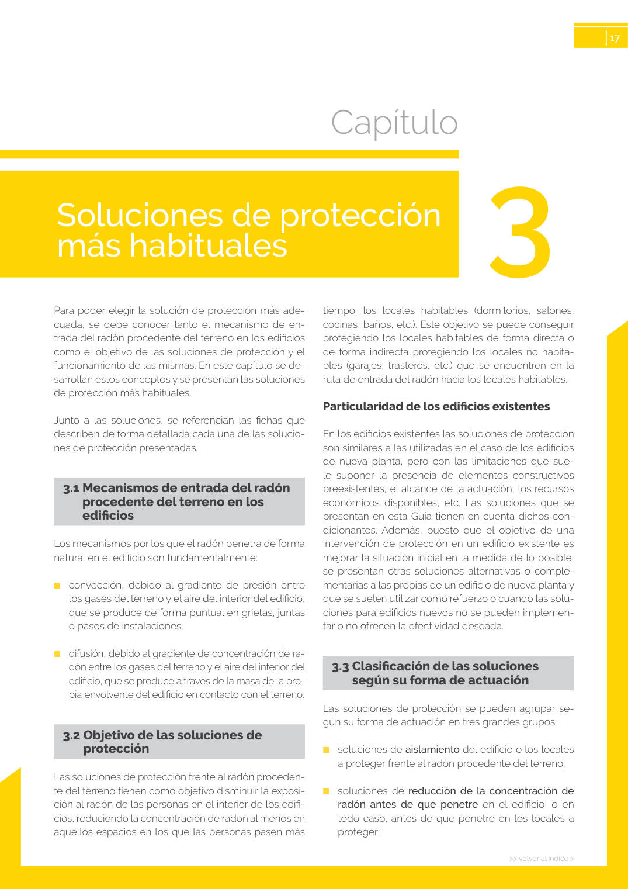

Índice › GUIA › a0050Cita: GUIA · ID técnico a0050 · Capítulo · páginas físicas pág. 17-18 (impresas: ['17', '18'])
Formatos: JSON compacto · Markdown · PDF fuente
Ámbito del documento · texto del ámbito ·
documento y tablas
← Soluciones de protección más habituales Soluciones de reducción del radón antes de que penetre en los locales a proteger → Capítulo
Tipo: tablas, figuras · nivel 1 · sección estimada: Capítulo · padre:
Capítulo
3
18
>> volver al índice >
>> volver al índice >
Soluciones de protección más habituales
Figura 9 – Puerta estanca (arriba) y sobrepresión (abajo)
Tablas en estas páginas Página visual 
Página visual 17 (fuente para fórmulas/tablas/figuras) Página visual 18 (fuente para fórmulas/tablas/figuras) PDF fuente redistribuible: copia fiel enlazada en esta página (SHA256 verificado).
Generado estáticamente desde JSON normalizado; sin JavaScript ni servicios externos.
El JSON es la fuente; este HTML es caché reproducible.